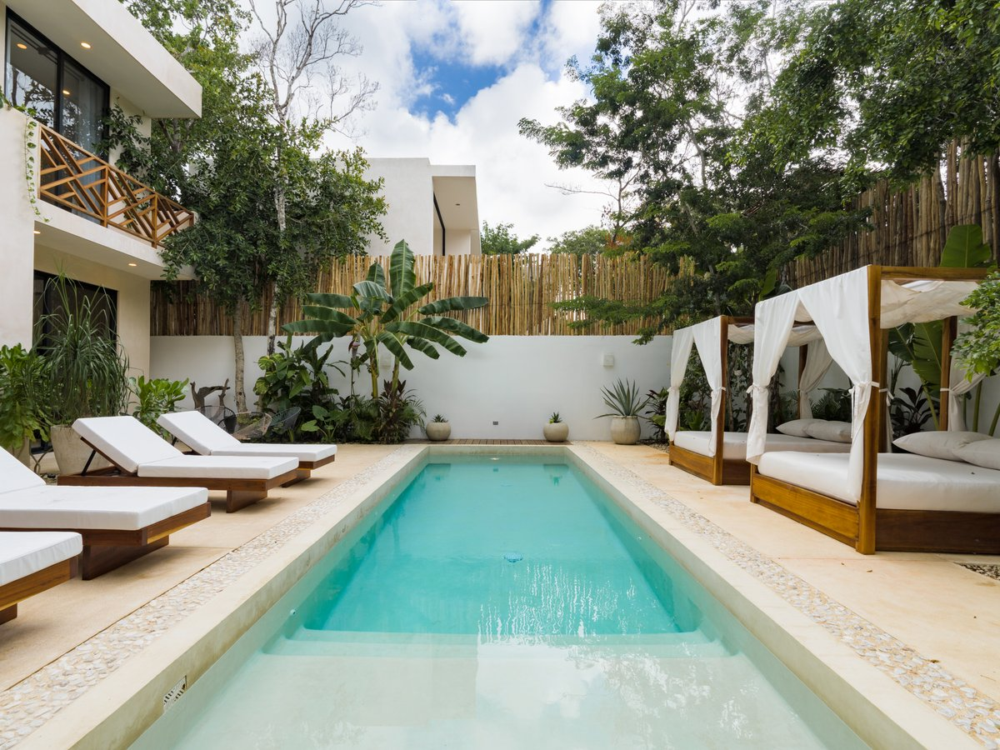

Buying Villa Sorella in Tulum: A Guide for Informed Buyers

Villa Sorella, located in Aldea Zama, Tulum, offers a blend of features that appeal to both lifestyle buyers and those considering rental potential. Understanding the specifics of Villa Sorella and its market context is important.
Villa Sorella: Key Features and Location
Villa Sorella is designed for comfort and offers amenities that guests and owners value.
Villa Sorella Facts (from Aventuras Villas Facts Contract):
- Location: Aldea Zama, Tulum
- Bedrooms: 4 bedrooms
- Bathrooms: Each bedroom has a private washroom
- Capacity: Up to 10 guests
- Beds: 3 king beds and 2 double beds
- Outdoor Space: Private pool
- Internet: Starlink internet up to 200 Mbps
- Security: 24/7 security
- Proximity to Beach: Beaches about 5 minutes away by car, dedicated bike lane to beach
- Local Amenities: Near dining, coworking, beauty salons, gyms, and shops
- Pets: Pets welcome
- Construction: Built with eco-friendly local materials
Villa Sorella's location in Aldea Zama provides access to community benefits, including 24/7 security and proximity to essential services. Aldea Zama is not a beachfront area, so buyers should evaluate transportation, beach access preferences, and daily logistics before purchasing.
Practical Considerations for Villa Sorella Buyers
For those considering Villa Sorella, several practical points are worth evaluating:
Personal Use vs. Rental Use
- Personal Lifestyle: Villa Sorella's spacious layout, private pool, and amenities like Starlink internet make it suitable for personal use and family vacations.
- Rental Potential: As a 4-bedroom villa with private washrooms and capacity for up to 10 guests, Villa Sorella has features that guests often look for. Rental results still depend on seasonality, pricing, guest experience, and management.
Due Diligence and Ownership Structure
- Legal Process: Foreign ownership in Mexico's coastal areas typically involves a `fideicomiso` (bank trust). Engaging local legal counsel is recommended to navigate this process.
- Property Specifics: Verify all property documents, including title deeds, permits, and any homeowner association rules in Aldea Zama.
Property Management Reality
- If you intend to rent out Villa Sorella, consider how property management will be handled. This includes maintenance, guest services, marketing, and compliance with local rental regulations. Professional property management can be a valuable partner.
Villa Sorella vs. Other Aventuras Villas Properties
Comparing Villa Sorella with other properties like Casa Aventura or the Villa Tikal project can help clarify your buying decision.
- Casa Aventura: Also in Aldea Zama, Casa Aventura offers similar capacity and amenities, including 4 bedrooms, 4.5 bathrooms, and a cenote-inspired private pool.
- Villa Tikal: This is a 5-bedroom priority sale/investment project in Aldea Zama, designed for buyers seeking a development opportunity. Villa Tikal is not treated as a rental villa.
Frequently Asked Questions about Villa Sorella
Where is Villa Sorella located?
Casa Aventura is approximately 10 minutes from Tulum beaches. Villa Sorella is about 5 minutes away by car, with a dedicated bike lane to the beach.
How many bedrooms does Villa Sorella have?
Villa Sorella has 4 bedrooms, each with a private washroom.
Does Villa Sorella have Starlink internet?
Yes, Villa Sorella includes Starlink internet up to 200 Mbps.
How far is Villa Sorella from the beach?
Beaches are about 5 minutes away by car from Villa Sorella, with a dedicated bike lane also leading there.
Can I rent out Villa Sorella?
Villa Sorella has features guests often look for, and many owners rent their villas. Rental performance depends on various market factors and effective management.
What is the main advantage of buying in Aldea Zama?
The main advantage is the combination of a more planned residential setting, access to services, and reasonable distance to the beach. Buyers should still verify the property, the building, and the operating assumptions before purchasing.
Connect for More Information
Explore our full buyer ecosystem for detailed insights and opportunities.
- Buyer Ecosystem: https://onrelas.github.io/aventurasvillas/
- Official Links: https://linktr.ee/aventurasvillastulum
- WhatsApp Inquiry: https://wa.me/16478346090